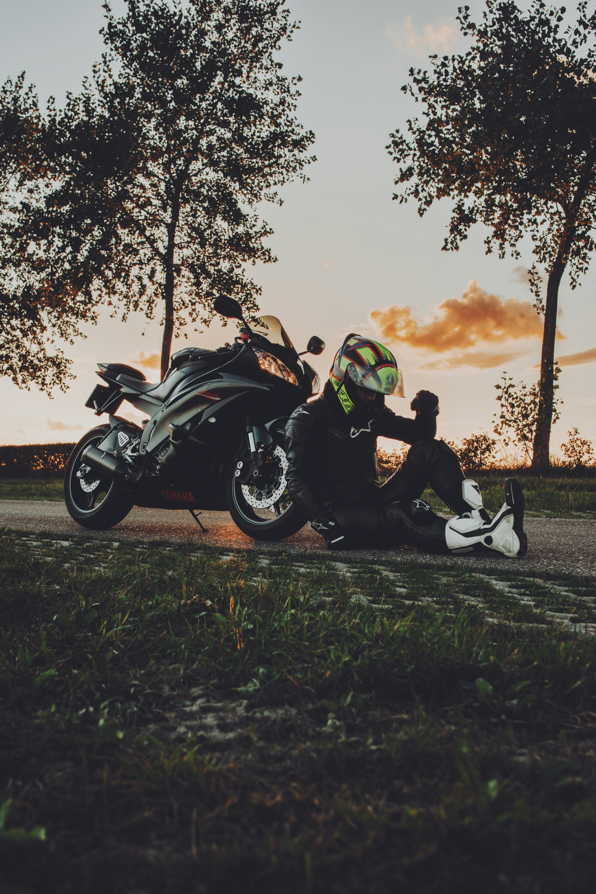

The 2017 Triumph Bonneville Bobber was one of the most highly anticipated new models to bereleased last year, an instant hit that quickly became the fastest selling new model in the company's 115-year history. True to its Bonneville roots, it's a prototypical bobber, with a solo tractor seat floating above a rear shock hidden within its hardtail-look frame, a small gas tank best suited to bombing around 4....605136 g 19-inch front wheel (wire spoked, of course) and “bobbed” fenders.
made a great first impression on me when I first rode it back in December 2016, despite several weaknesses (wimpy brakes, a pogo stick fork and that small gas tank). It's so smooth and powerful, a complete package, that I was forced into calling a draw when it came down to choosing between the Triumph and the Indian Scout Bobber in a recent bobber comparison (Rider, January 2017 and on ridermagazine.com). If I'd had this new Bobber Black version, however... well, who knows.